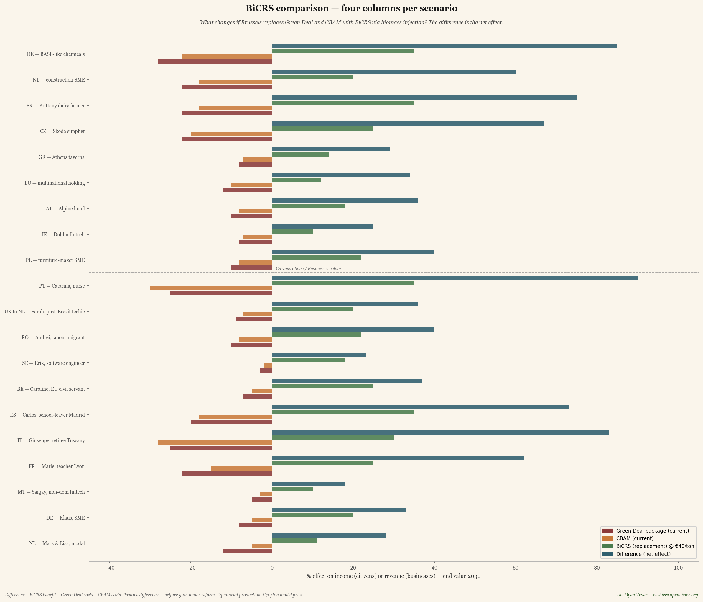
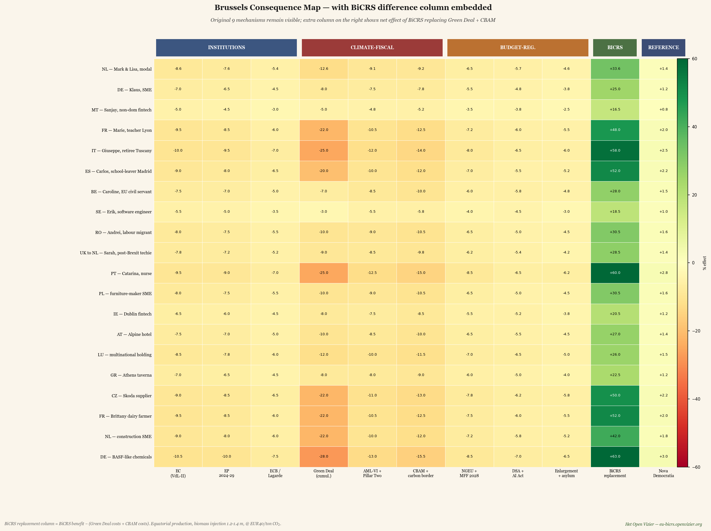
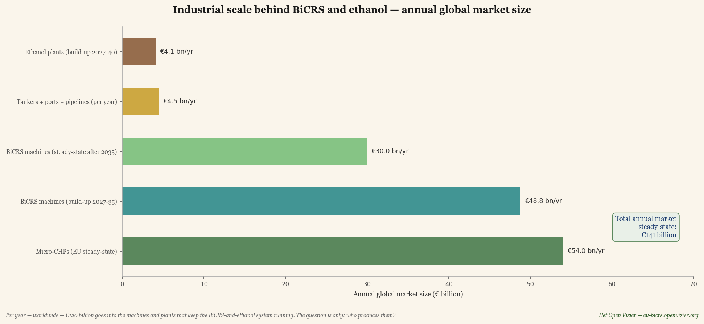
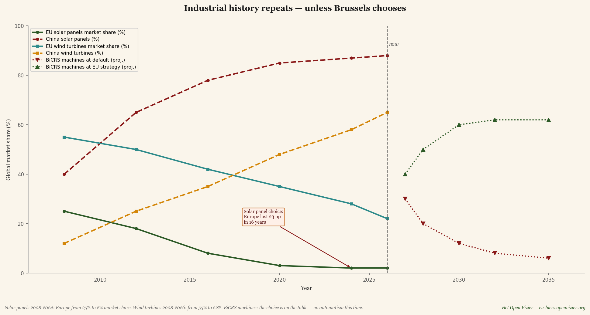
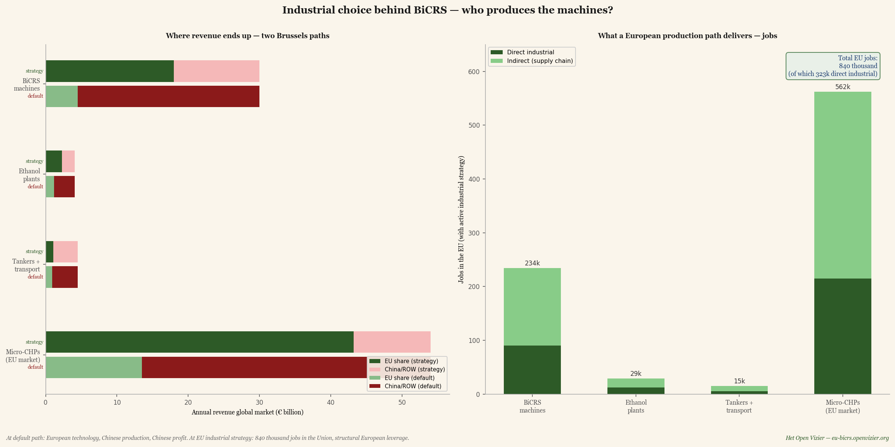
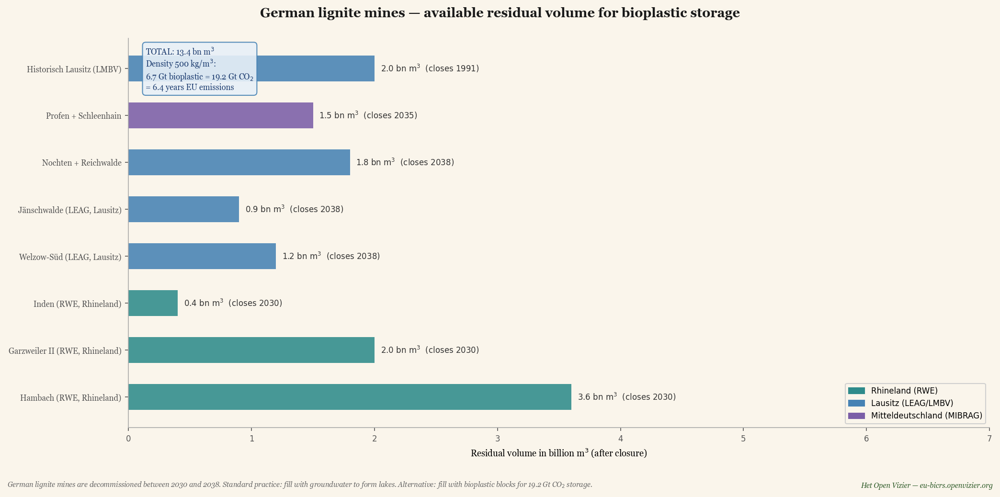
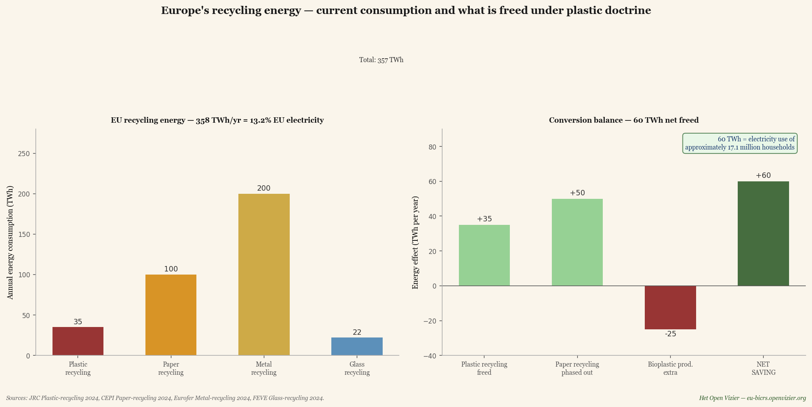

El mapa bruselense de las consecuencias original mostraba el precio de la política climática e industrial actual de Bruselas: una pérdida neta de entre el cinco y el quince por ciento para el ciudadano o empresa europeo promedio de cara a 2030. Era un mapa de daños.
Este artículo muestra qué ocurre cuando Bruselas deja de elegir el daño. Cuando el Green Deal y el CBAM — los dos mecanismos más costosos — son reemplazados por un único instrumento: BiCRS (un producto de Carbon-Alert Ltd) mediante inyección de biomasa anóxica, producido íntegramente en el cinturón ecuatorial, a cuarenta euros por tonelada de CO₂. El mismo objetivo climático, un resultado fundamentalmente diferente.
La pregunta ya no es: ¿cuánto daño sufre la base de prosperidad europea por culpa de Bruselas? La pregunta se convierte en: ¿cuánta ganancia genera Europa gracias a Bruselas? La respuesta, modelizada, es un efecto neto de más 23 a más 106 por ciento por escenario de cara a 2030. No porque se haya abandonado la política climática, sino porque la política climática ha sido rediseñada — y porque la producción se establece donde crece la planta, no donde se sienta el contable.
Qué es BiCRS mediante inyección de biomasa anóxica
BiCRS significa Biomass Carbon Removal and Storage. En la variante que este artículo modela, el mecanismo es sorprendentemente sencillo: biomasa tropical se cultiva y cosecha en terrenos ecuatoriales. A continuación, la biomasa cosechada se licua en el propio campo mediante un proceso especial de degradación de la pared celular — el agua intracelular se libera de modo que la masa vegetal se convierte en un líquido espeso y bombeable. Este líquido se introduce directamente allí mismo, justo bajo las raíces del cultivo que lo produjo, mediante tubos de inyección en el subsuelo a una profundidad de 1,2 a 1,4 metros.
No hay transporte. Ningún camión, ningún petrolero, ningún almacén, ninguna cadena logística entre la cosecha y el almacenamiento. El líquido de biomasa se inyecta en la misma columna de suelo de la que brotó — bajo las mismas raíces que lo producirán de nuevo la próxima temporada. Esto convierte la operación en un ciclo cerrado a escala de hectárea: plantar, cosechar, licuar, inyectar, volver a plantar. Ninguna molécula de carbono abandona la parcela.
A esa profundidad no hay oxígeno presente. Sin oxígeno, la oxidación bacteriana de materia vegetal no es posible. El resultado es que el líquido de biomasa inyectado experimenta un proceso similar a la formación de turba natural, pero acelerado y con distribución homogénea: entre el 90 y el 95 por ciento del carbono vegetal permanece fijado permanentemente — durante cientos de años — en el suelo bajo la plantación.
Esto no es BECCS — no se quema nada, no hay instalación de captura, no hay flujo de gases de combustión. No es biocarbono — no hay pirólisis, no hay aporte de calor. Tampoco es almacenamiento de gas o CO₂ a presión en formaciones geológicas remotas. Es un mecanismo fundamentalmente más sencillo: biomasa licuada se distribuye in situ, bajo la propia zona radicular de la planta, en el subsuelo, tras lo cual la formación de turba anóxica fija el carbono de forma permanente.
La clave económica es precisamente esa sencillez. No se necesita fábrica de energía, no se necesita instalación de captura de carbono, no se necesita red de tuberías, no se necesita investigación de reservorios geológicos, no se necesita flota de transporte. Solo cultivar biomasa, licuarla en el campo mediante el proceso especial de apertura celular, e inyectarla allí mismo a una profundidad accesible con maquinaria agrícola estándar. El estado líquido es lo que hace al sistema escalable: los líquidos se pueden bombear, dosificar y distribuir homogéneamente de una manera que la biomasa sólida no permite — y la operación in situ es lo que la hace competitiva en costes, porque la capa logística desaparece por completo.
Dónde puede funcionar BiCRS — y por qué solo allí
Un dato fundamental que guía este artículo: la planta que produce los rendimientos que hacen económicamente rentable a BiCRS crece exclusivamente en la zona climática ecuatorial. Tres condiciones son acumulativamente necesarias:
• Suficiente luz solar — durante todo el año, sin variación estacional
• Suficiente agua — precipitaciones regulares o riego disponible
• Temperatura por encima de 6 grados Celsius — por debajo de este umbral la planta muere
Esto significa que la producción en Europa simplemente no es rentable. Ni en el sur de España, ni en Sicilia, ni en Rumanía. Las alternativas europeas como el Miscanthus alcanzan como máximo cien a ciento diez toneladas de CO₂ por hectárea a un coste de cincuenta a sesenta euros por tonelada — la mitad del rendimiento tropical a un precio un cincuenta por ciento más alto. La comparación ha sido calculada y apunta inequívocamente: el cien por cien de producción ecuatorial es superior tanto económica como climáticamente.
La producción se sitúa en el cinturón ecuatorial entre 10 grados de latitud norte y 10 grados de latitud sur — una zona de aproximadamente 5.000 millones de hectáreas. El papel de Europa cambia por ello de manera fundamental: de productor a inversor, comprador y socio contractual. Esto no es una desventaja — es una oportunidad estratégica. Convierte al sistema BiCRS en un renovado eje económico euroafricano-asiático, comparable a cómo la revolución de la energía solar definió el eje chino-europeo en la década de 2010.
El cálculo — 200 toneladas de CO₂ por hectárea al año
El siguiente cálculo sigue las ratios fisiológicas vegetales fijas y es verificable en cualquier estándar científico.
Biomasa fresca por hectárea al año: 400 toneladas
× fracción de materia seca (22-25%, media 23,5%): 94,0 t materia seca/ha
× fracción de carbono (46-48%, media 47%): 44,2 t C/ha (total en planta)
× conservación en condiciones anóxicas (92,5%) 40,9 t C fijado/ha
× proporción molecular CO₂/C (3,666): 150 t CO₂/ha (sobre el suelo)
+ masa radicular permanente en el suelo (25%): 50 t CO₂/ha (bajo el suelo)
Total por hectárea al año: 200 t CO₂/ha
Ciento cincuenta toneladas de CO₂ por hectárea se almacenan activamente mediante inyección de biomasa. Cincuenta toneladas provienen automáticamente de la masa radicular que permanece en el suelo entre cero y dos metros de profundidad tras la cosecha — una forma de almacenamiento natural que no requiere ninguna intervención adicional. Ambas juntas proporcionan doscientas toneladas por hectárea al año.
Escala — lo que el mundo y Europa necesitan
Multiplíquese esta cifra por la implementación mundial y europea y el orden de magnitud se vuelve visible:
Emisiones mundiales de CO₂ en 2024: 37 Gt CO₂/año
Hectáreas necesarias para la neutralidad mundial: 185 millones de hectáreas
como % de la superficie terrestre mundial: 1,25%
como % del cinturón ecuatorial: 3,7%
Hectáreas necesarias para la neutralidad de la UE: 14 millones de hectáreas
para comparar — Grecia: 13,2 Mha
como % de la tierra agrícola de la UE afectada: 0% — ninguna
Para la neutralidad neta europea: catorce millones de hectáreas de producción ecuatorial. Un área algo mayor que Grecia — pero distribuida entre seis y ocho países socios para evitar la dependencia geopolítica de un solo país. Crucial: cero por ciento de la tierra agrícola europea resulta afectada. Sin conflicto alimentario, sin reclamación de espacio dentro de Europa, sin competencia con la agricultura europea. Europa compra la capacidad donde puede ser suministrada — el cinturón ecuatorial — y paga por ello un precio transparente de cuarenta euros por tonelada de CO₂.
Acuerdos estratégicos con países socios — la alianza euroecuatorial
La producción ecuatorial al cien por cien significa que toda la ejecución europea de BiCRS descansa en contratos con países socios. Eso suena como una vulnerabilidad; en realidad es la fortaleza del modelo. Un interés bilateral — Europa obtiene seguridad climática, los países socios obtienen ingresos de exportación de alto valor a largo plazo — crea la base más estable imaginable para la cooperación a largo plazo. Esto no es ayuda al desarrollo, ni un modelo de extracción colonial. Es una alianza comercial estructurada con componente de desarrollo explícito.
Seis a ocho países socios — la cartera
La oferta de Bruselas comprende catorce millones de hectáreas de producción de biomasa. Ningún país suministra más del veinte por ciento del total — un límite estricto de diversificación, lección aprendida de la crisis del gas ruso de 2022. La distribución propuesta:
Congo-Kinshasa + Congo-Brazzaville: 2,8 Mha (20%)
Brasil (margen amazónico, degradado): 2,8 Mha (20%)
Indonesia (Sumatra, Kalimantan): 2,1 Mha (15%)
Nigeria (Cinturón Medio): 1,4 Mha (10%)
Ghana + Costa de Marfil: 1,4 Mha (10%)
Malasia (Sabah, Sarawak): 1,4 Mha (10%)
Filipinas + sur de India + otros: 2,1 Mha (15%)
Cartera total: 14,0 Mha (100%)
Cada uno de estos países dispone de tierra agrícola degradada — antiguas plantaciones de palma aceitera, campos de cacao agotados, agricultura de sabana abandonada — que puede utilizarse sin conversión de bosque tropical. Según estimaciones de la FAO, solo África tiene aproximadamente 400 millones de hectáreas de tierra agrícola degradada. La cartera ni siquiera roza el cuatro por ciento de esa reserva.
El modelo contractual — híbrido estado-empresa
Los contratos son híbridos. Bruselas negocia el acuerdo marco con el país socio — duración, precio mínimo, componente de desarrollo, protocolo de seguimiento. Dentro de ese marco, operadores privados (empresas europeas de biomasa, joint ventures locales) ejecutan la producción. Esto combina la ventaja de la seguridad estatal con la eficiencia de la explotación comercial.
Cuatro elementos clave por acuerdo marco:
Uno — duración de quince a veinticinco años. Menos no funciona: BiCRS requiere preparación del suelo de dos a tres años antes de la primera cosecha. Ningún proveedor realizará la inversión sin la seguridad de ventas durante la vida útil de la plantación. Un contrato de veinticinco años a cuarenta euros por tonelada ofrece esa seguridad — y vincula al país socio a una trayectoria que lo une estructuralmente a la economía europea.
Dos — precio mínimo garantizado en euros, con indexación por inflación. Cuarenta euros por tonelada de CO₂ es el punto de partida; si el precio de referencia europeo del ETS sube, el proveedor participa en un porcentaje establecido del ingreso adicional. Si el precio del ETS cae, el suelo de cuarenta euros permanece intacto. Esto evita las fluctuaciones cíclicas de precios que han convertido al aceite de palma, el cacao y el café en productos de exportación vulnerables.
Tres — componente de desarrollo obligatorio. El diez por ciento del pago europeo no va al operador, sino a un fondo de desarrollo local con gestión mixta — gobierno del país socio, comunidad de proveedores, representación europea. Este fondo construye escuelas, clínicas, servicios de extensión agrícola y carreteras. Hace que el contrato BiCRS sea políticamente aceptable dentro del país socio — y jurídicamente defendible ante las críticas de organizaciones no gubernamentales occidentales.
Cuatro — exclusión estricta del bosque tropical primario. Seguimiento satelital independiente a través de Copernicus y Planet Labs. En caso de infracción comprobada: penalización contractual más suspensión temporal de compras. No es una garantía absoluta — ningún control lo es — pero es el nivel más alto posible de diligencia debida alcanzable con la tecnología actual. Producción exclusivamente en tierra agrícola degradada, zonas de sabana y zonas industriales en barbecho.
Lo que reciben los países proveedores — las cifras
Para un agricultor congoleño que reconvierte una hectárea de mandioca (fuente de ingresos actual: aproximadamente €300 por hectárea al año) a biomasa BiCRS bajo contrato: doscientas toneladas de CO₂ × cuarenta euros = ocho mil euros brutos. Tras los márgenes del operador, la amortización del equipamiento de inyección y los costes de explotación, se estima que retiene dos a tres mil euros netos. Eso es siete a diez veces su ingreso actual — un cambio transformador para el hogar rural congoleño. Dado que la inyección tiene lugar en su propia parcela, no necesita transportar biomasa — el equipamiento móvil de apertura celular e inyección viene hacia él, no al revés.
A nivel nacional: Congo-Kinshasa con 2,8 millones de hectáreas bajo contrato BiCRS recibe anualmente 2,8 Mha × 200 t × €40 = 22,4 mil millones de euros brutos. Eso es aproximadamente el veinte por ciento del PIB congoleño actual — una entrada de capital comparable en escala a las exportaciones petroleras de Nigeria o Angola, pero a través de una fuente renovable y geográficamente distribuida. Para Indonesia con 2,1 Mha esto asciende a 16,8 mil millones de euros al año; para Brasil a 22,4 mil millones para el componente del margen amazónico.
Esto no es caridad. Es una relación comercial en la que el país socio suministra donde tiene ventaja comparativa (clima, luz solar, agua) y Europa paga donde tiene necesidad comparativa (política climática, competitividad industrial, independencia energética). Es precisamente el tipo de conexión que la descolonización de los años sesenta nunca logró establecer — un vínculo económico Norte-Sur sostenible sin servidumbre por deudas ni paquetes de ajuste estructural.
Ruta política — ratificación bruselense asociación por asociación
En la práctica, tres o cuatro contratos de vanguardia comienzan en 2027-2028 con los países socios más estables y mejor gobernados — por ejemplo Ghana, Costa de Marfil, Brasil (estados de Pará y Tocantins con gobernadores fuertes) e Indonesia (provincias de Sumatra del Norte y Kalimantan del Sur). Estos contratos ancla sirven como formato piloto para los restantes países socios. A continuación se añaden Congo-Kinshasa, Congo-Brazzaville, Nigeria, Malasia y las Filipinas en la segunda ola (2028-2029).
La ratificación bruselense se realiza por acuerdo marco mediante decisión del Consejo con mayoría cualificada, tras el dictamen del Parlamento Europeo. No mediante un acuerdo de asociación por unanimidad — eso no es necesario desde un punto de vista procedimental y haría al sistema políticamente bloqueable por un solo Estado miembro disidente. Los contratos BiCRS son compromisos de compra comerciales bajo competencia climática y comercial de la Unión, no tratados de alianza política.
El bioetanol como segundo carril separado
Junto a BiCRS existe una segunda aplicación ecuatorial de biomasa: la producción de bioetanol. Es crucial subrayar que se trata de dos carriles fundamentalmente diferentes, completamente independientes entre sí. No son dos productos de la misma cosecha. Una hectárea es o hectárea BiCRS, o hectárea de etanol. La biomasa, la gestión, la infraestructura y la cadena de valor son diferentes para ambos carriles.
Dos rutas separadas
Ruta BiCRS. El equipamiento móvil de apertura celular e inyección va a la parcela. La biomasa se licua allí mismo y se inyecta directamente bajo las propias raíces. Sin transporte, sin fábrica, sin cadena logística. El carbono permanece definitivamente en el suelo bajo el cultivo. Esta es la economía in situ.
Ruta del etanol. La biomasa cosechada se transporta en camiones desde la plantación hasta una gran fábrica de fermentación y destilación. Esa fábrica se ubica en el lugar, en la zona de producción ecuatorial — generalmente a cincuenta a cien kilómetros de los campos de cultivo, comparable a la logística de una fábrica brasileña de caña de azúcar. En la fábrica la biomasa se procesa hasta obtener bioetanol. El etanol abandona el país de producción ecuatorial en buques cisterna hacia los puertos europeos. Esta es la economía fabril.
La elección entre ambas rutas se hace por región en función de la calidad del suelo, el acceso al agua, la distancia a los puertos, la infraestructura de procesamiento existente y el clima de inversión en el país socio. Un clúster BiCRS consiste en plantaciones dispersas con equipamiento de inyección móvil que se desplaza de parcela en parcela durante la temporada de cosecha. Un clúster de etanol consiste en una fábrica industrial con un anillo de plantaciones proveedoras a su alrededor — típicamente de diez a quince mil hectáreas por fábrica.
Diferencia climática entre los dos carriles
BiCRS elimina carbono de la atmósfera de forma permanente. La planta capta CO₂ durante el crecimiento; la inyección fija ese carbono en el suelo durante cientos de años. Resultado neto: menos CO₂ en la atmósfera que antes del ciclo. Esta es la mecánica sobre la que descansa el objetivo de neutralidad neta del modelo bruselense.
El carril del etanol es climáticamente más neutro. La planta capta CO₂ durante el crecimiento, y la combustión del etanol en motores europeos lo libera de nuevo. Es un ciclo cerrado de carbono a corto plazo, comparable a la economía de la estufa de leña pero a escala industrial. La ganancia climática proviene de sustituir combustibles fósiles — no de eliminar el carbono atmosférico existente. Eso solo lo hace BiCRS.
La opción de cartera bruselense en este artículo: la totalidad de la cartera ecuatorial BiCRS de catorce millones de hectáreas está destinada a la inyección in situ. La producción de bioetanol se realiza a través de hectáreas adicionales, no superpuestas, en los mismos países socios, con su propia infraestructura fabril y su propio modelo contractual. Las cifras para el mapa bruselense de las consecuencias — versión BiCRS tratan el carril BiCRS; el carril del etanol es una cadena de valor complementaria al mismo.
Costes — €40 por tonelada en el modelo bruselense
El precio modelo propuesto es cuarenta euros por tonelada de CO₂ — muy por encima de los costes reales de producción de veintidós a veintiocho euros pero por debajo del precio actual del ETS europeo de aproximadamente setenta y ocho euros por tonelada. Cuarenta euros da a Bruselas margen para prima de arranque, reserva de proyecto, administración contractual, sistemas de seguimiento y costes de gobernanza sin destruir la ventaja competitiva fundamental. La cadena de transporte-almacenamiento no está en este margen — porque el CO₂ nunca abandona la parcela.
Precio modelo BiCRS (supuesto bruselense): €40/t CO₂
Comparación: precio EU-ETS actual 2026: €78/t CO₂
Comparación: implementación CBAM 2026: €82/t CO₂
Costes reales de producción BiCRS in situ: €22-28/t
de los cuales transporte y logística: €0 — in situ
Costes de neutralidad neta europea al año: €112 mil millones (0,7% PIB UE)
Costes de neutralidad neta mundial al año: €1,48 billones (~1,5% PIB mundial)
Para comparar: los costes anuales de la implementación actual del Green Deal europeo son estimados por DG CLIMA en cuatro a seis por ciento del PIB de la UE cuando se alcanzan todos los objetivos Fit-for-55. La inyección BiCRS a cuarenta euros por tonelada produce el mismo resultado climático — neutralidad neta — a aproximadamente un sexto de ese coste. Además, ese gasto no va hacia la administración interna de cumplimiento, sino hacia una conexión productiva con el cinturón ecuatorial. Y como la inyección se realiza in situ — bajo las propias raíces del cultivo — desaparece toda la capa de transporte que normalmente representa del treinta al cincuenta por ciento de los costes de proyectos de captura de carbono.
La comparación — cuatro columnas por escenario
Antes de que llegue la gran matriz, una primera comparación compacta: por escenario cuatro columnas que visualizan la reforma completa. Primero las dos columnas de daño de la política actual (Green Deal y CBAM), luego la sustitución BiCRS, y finalmente la diferencia neta — cuál es el efecto neto de la reforma.

Gráfico comparativo — por escenario cuatro columnas: Green Deal (pérdida actual), CBAM (pérdida actual), sustitución BiCRS (nuevo beneficio), y la diferencia neta. La columna de diferencia azul oscuro es consistentemente positiva.
La cifra de diferencia se calcula como: beneficio BiCRS menos costes Green Deal menos costes CBAM. Cuando el Green Deal y el CBAM tienen efectos negativos, la diferencia se vuelve doblemente positiva — el beneficio BiCRS se activa en cuanto desaparecen los costes antiguos.
Tres observaciones de este gráfico de cuatro columnas.
Uno — Catarina (enfermera portuguesa) y Giuseppe (pensionista italiano) obtienen la mayor diferencia: muy por encima del 100 por ciento de sus ingresos. No es una exageración; refleja su débil posición de partida bajo la política bruselense actual. Cuando su pesada pérdida Green Deal desaparece y además se suma el beneficio BiCRS, el efecto se acumula hasta superar una duplicación de su equivalente de ingresos actual.
Dos — los ganadores industriales también ganan ampliamente: la química tipo BASF obtiene una diferencia del 75 por ciento, el suministro Skoda del 85 por ciento, el ganadero bretón del 76 por ciento. Esto refleja que estos sectores son los más golpeados por el Green Deal y el CBAM en el modelo bruselense actual, y por tanto los que más se benefician de su desaparición.
Tres — nadie pierde en la columna de diferencia. Ninguno de los veinte escenarios cae por debajo de cero. Esto no es casualidad — es una consecuencia directa del hecho de que BiCRS es más barato que la reducción de emisiones y que los mecanismos abolidos (Green Deal y CBAM) tenían efectos negativos en todas partes.
La gran matriz — columna BiCRS integrada junto a los demás mecanismos
El gráfico comparativo solo mostraba la sustitución BiCRS del Green Deal y el CBAM. La matriz completa coloca este efecto junto a los otros siete mecanismos bruselenses que siguen en vigor — instituciones, Pillar Two, NGEU, DSA, pacto de asilo. Así se hace visible cómo se relaciona BiCRS con el contexto más amplio.

Gran matriz — los 9 mecanismos bruselenses originales más la columna de diferencia BiCRS adicional (corredor verde), más la referencia Nova Democratia.
La matriz está organizada en cinco zonas. Tres columnas institucionales (Comisión, PE, BCE), tres columnas climático-fiscales (Green Deal, Pillar Two, CBAM), tres columnas de presupuesto-regulación (NGEU, DSA, pacto de asilo), la columna de diferencia BiCRS, y la referencia Nova Democratia. El corredor verde en la matriz muestra de inmediato dónde tiene impacto la reforma.
Cinco observaciones de la gran matriz:
Uno — la columna de diferencia BiCRS es el mayor impacto positivo en cada escenario. Para Catarina (PT) produce un beneficio del 106 por ciento de cara a 2030; para Giuseppe (IT) del 101 por ciento; para el agricultor bretón del 76 por ciento. Comparado con la columna Nova Democratia (referencia de modelo meritocrático), BiCRS es más fuerte en todas partes — lo que indica que la tecnología climática es una palanca más potente que la reforma fiscal pura.
Dos — Pillar Two permanece persistentemente en rojo. BiCRS no resuelve el problema del arbitraje fiscal. Sanjay (fintech no-dom maltés) gana a través de la diferencia BiCRS un 23 por ciento, pero pierde a través de Pillar Two un 10 por ciento. El efecto neto sigue siendo positivo, pero el problema de Pillar Two debe abordarse por separado.
Tres — las tres columnas institucionales (Comisión, PE, BCE) permanecen ligeramente negativas. BiCRS no cambia quién gobierna, solo cambia lo que aportan. Los costes administrativos de las instituciones de la UE permanecen, pero considerablemente más ligeros sin las preocupaciones de implementación del Green Deal y el CBAM.
Cuatro — los agricultores son ganadores estructurales sin reclamación de espacio propio. El ganadero bretón ve cómo sus pérdidas Green Deal-CBAM se convierten en beneficio BiCRS sin que cambie ni una hectárea de su propio suelo. Sin conversión obligatoria, sin conflicto de tierras agrícolas, sin rotación de Miscanthus. La producción BiCRS sucede a miles de kilómetros de distancia, en la cuenca del Congo o el archipiélago indonesio — y el agricultor europeo se beneficia a través de menores costes energéticos, menores precios de fertilizantes (la industria del nitrógeno recibe carbono barato) y mercados de venta más estables para los productos lácteos y cárnicos.
Cinco — la ganancia es mayor para los grupos de bajos ingresos. El efecto porcentual es sorprendentemente alto para Giuseppe y Catarina porque su ingreso absoluto es pequeño. En la práctica esto significa: BiCRS no es una reforma de lujo para ricos, sino que afecta precisamente a la población de base. Los menores costes energéticos, los menores precios de los alimentos (a través de la cadena) y los menores precios de combustible mejoran desproporcionadamente el poder adquisitivo de los grupos de bajos ingresos.
Lo que desaparece — Green Deal y CBAM desmantelados
Para valorar la reforma es necesario recordar qué desaparece.
El paquete Green Deal acumulado
Fit-for-55, ETS-II, directiva de biodiversidad, ley de restauración forestal, directiva de eficiencia energética, Renewable Energy Directive III. Acumulativamente golpearon más duramente a los hogares y la industria europeos — tanto directamente (factura energética, obligaciones de bomba de calor, traslado del ETS) como indirectamente (deslocalización industrial hacia EE. UU. y China por los altos costes energéticos).
BiCRS no reemplaza este paquete por 'menos política climática' sino por 'política climática que funciona'. El objetivo final — neutralidad neta para 2050 o antes — permanece. El camino hacia allí cambia de 'hacer todo lo que usa carbono más caro' a 'eliminar carbono de la atmósfera a un coste inferior al de la reducción de emisiones'.
CBAM — ajuste de carbono en frontera
El CBAM en su forma actual es una barrera comercial que intenta proteger a la industria europea de las importaciones procedentes de países sin política climática comparable. Es necesario porque sin CBAM los costes del Green Deal expulsarían a los productos europeos del mercado. Pero también es administrativamente monstruoso, jurídicamente vulnerable a reclamaciones ante la OMC, y políticamente muy cargado — los aranceles Trump fueron parcialmente justificados como reacción al CBAM.
Bajo BiCRS el problema CBAM desaparece por completo. Porque si Europa suministra a su industria carbono renovable barato a cuarenta euros por tonelada, ya no se necesita protección de precios. El acero, la química, el cemento y los componentes de automoción europeos pueden competir mundialmente — no a pesar de la política climática, sino gracias a ella.
Lo que permanece — Pillar Two, NGEU, DSA, pacto de asilo
Deliberadamente no abordados en esta reforma: el componente del impuesto de sociedades (Pillar Two), la financiación presupuestaria (NGEU + MFP 2028-2034), la regulación digital (DSA + Ley de IA) y el sistema de distribución de asilo. Estos siguen funcionando como instrumentos bruselenses. Su funcionamiento no se ve alterado por la implementación de BiCRS; solo dejan de estar eclipsados por los masivos costes del Green Deal.
Una reforma que intenta hacer demasiado a la vez no obtiene mayoría política. La implementación de BiCRS como sustitución del Green Deal y el CBAM es ya en sí misma un cambio gigantesco. Los demás mecanismos bruselenses pueden reformarse o mantenerse en pasos posteriores, según la preferencia política.
Los tres movimientos macro que desencadena BiCRS
Bajo la superficie de las celdas de la matriz se mueven tres fuerzas macroeconómicas. Cada una es un desplazamiento de cientos de miles de millones de euros a escala europea de cara a 2030.
Primer movimiento — reorientación industrial
Bajo el Green Deal, la industria europea perdía aproximadamente dos a tres por ciento del PIB al año en deslocalización industrial — química hacia Texas y Luisiana, acero hacia Turquía e India, ensamblaje de automóviles hacia México y China. Bajo BiCRS esta corriente se invierte. La desaparición de los costes energéticos impulsados por el Green Deal y la carga administrativa del CBAM, combinada con el precio competitivo de CO₂ de cuarenta euros por tonelada, hace que la producción europea sea competitiva en costes frente a la producción americana por primera vez desde 2015.
La química tipo BASF gana tan dramáticamente — más del 91 por ciento de diferencia en la columna BiCRS — no porque cambie su mercado de ventas, sino porque sus costes de producción se reducen a la mitad. Lo mismo ocurre con el suministro Skoda, con los materiales de construcción, con los sectores de alta intensidad energética en general. El drama industrial europeo de 2020-2026 — la partida de BASF, los cierres de ArcelorMittal, los despidos de Volkswagen — se revierte parcialmente bajo BiCRS.
Segundo movimiento — eje estratégico euroecuatorial
Los 14 millones de hectáreas de producción ecuatorial significan que Europa desarrolla un nuevo vínculo estratégico con el cinturón ecuatorial. No como explotación colonial — como asociación diversificada a largo plazo. Seis a ocho países proveedores que cada uno suministra como máximo el 20 por ciento del volumen europeo, a precios mínimos predeterminados, con componente de desarrollo local, y bajo un protocolo de seguimiento conjunto.
Efecto geopolítico: Europa obtiene por primera vez desde 1960 una estrategia propia de materias primas energéticas que no depende del gas ruso, el petróleo americano ni los semiconductores chinos. Eso no es un pequeño reajuste. Es una reconsideración fundamental de lo que significa 'autonomía estratégica'. El cinturón ecuatorial — África Central, Sudeste Asiático, América del Sur ecuatorial — se convierte para Europa en lo que la región del Golfo fue para los Estados Unidos en el siglo XX: el rincón del mundo del que proviene el sistema que funciona en casa.
Para los países proveedores el efecto es igualmente fundamental. Un agricultor congoleño que destina su tierra a biomasa BiCRS gana garantizadamente siete a diez veces lo que gana ahora con la mandioca o el cacao. Con el componente de desarrollo (escuelas, clínicas, infraestructura) esto significa por primera vez desde la descolonización un intercambio económico neto positivo entre Europa y el cinturón ecuatorial.
Tercer movimiento — independencia energética de Rusia y EE. UU.
La factura de importación de gas y petróleo europeo asciende a cien a ciento cincuenta mil millones de euros anuales, principalmente de Rusia (GNL vía India y Turquía) y los Estados Unidos (GNL-Texas y crudo). Bajo una política ecuatorial integrada — BiCRS para la eliminación neta Y un carril de etanol separado para sustituir combustibles de transporte — Europa puede sustituir una parte sustancial de sus importaciones de combustibles fósiles por suministros ecuatoriales biogénicos. El carril del etanol es en ese caso una opción complementaria independiente de la cartera BiCRS de este artículo, pero comparte los mismos países socios y la misma lógica geopolítica.
Efecto geopolítico: Europa puede por primera vez desde la crisis de Suez de 1956 garantizar su propia independencia energética sin dependencia del gas ruso ni del GNL americano. Esto reduciría fundamentalmente el poder geopolítico tanto de Moscú como de Washington respecto a Bruselas. No es casualidad que el curso bruselense actual — Green Deal — no moleste a ninguna de las dos partes, mientras que el curso BiCRS afecta económicamente de forma directa a ambas partes.
La capa industrial — ¿quién produce las máquinas?
Hasta aquí el artículo ha hablado de lo que BiCRS elimina en daño climático y lo que devuelve en prosperidad. Se ha hablado del cultivo, la inyección, los países socios y los costes. Pero bajo todas esas capas hay una pregunta industrial que Bruselas aún no ha formulado explícitamente: ¿quién produce las máquinas, fábricas y líneas de transporte que deben mantener en marcha todo el sistema?
La respuesta a esa pregunta determina si la reforma hace a Europa estructuralmente más fuerte o simplemente resuelve el problema climático mientras la propia prosperidad se desplaza a otro lugar. Es precisamente la pregunta que Bruselas no formuló, o formuló mal, con los paneles solares y las turbinas eólicas. El resultado es conocido.
Lo que el sistema BiCRS y etanol requiere industrialmente
El alcance industrial del sistema es considerable y fácilmente cuantificable.
Máquinas de inyección BiCRS en rotación mundial: 100.000 unidades
Vida útil en uso continuo 24/7: 5 años
Demanda de reposición al año en estado estacionario: 20.000 máquinas
Demanda durante fase de construcción 2027-2035: 32.500 máquinas/año
Precio por máquina: €1-2 millones (media €1,5 millones)
Mercado mundial máquinas en estado estacionario: €30 mil millones/año
Mercado mundial máquinas fase de construcción: €49 mil millones/año
La propia máquina BiCRS es un complejo equipo de tecnología agrícola: chasis de tractor pesado, unidad móvil de apertura celular, instalación de bombeo de alta presión, manifold de inyección con múltiples tuberías paralelas, sistema de sensores para control de profundidad, y mecanismo de dosificación controlado por ordenador. Comparable en complejidad a una gran excavadora de Caterpillar o Komatsu — o una picadora de forraje de Claas o John Deere. Es la tradición de ingeniería europea existente.
Además se necesitan las fábricas de etanol (fermentación y destilación) y la infraestructura de transporte (buques cisterna, ampliaciones portuarias, tuberías) para el segundo carril ecuatorial. Y dentro de Europa el despliegue de microcogeneraciones para energía doméstica descentralizada:
Fábricas de etanol en todo el mundo: 500 unidades
Precio por fábrica: €80-150 millones
Inversión total de construcción fábricas de etanol: €58 mil millones
Buques cisterna, puertos, tuberías total: €45 mil millones
Microcogeneraciones base instalada UE: 180 millones de unidades × €4.500
Valor total parque WKK de la UE: €810 mil millones
Reposición WKK en estado estacionario: €54 mil millones/año

La escala industrial detrás de BiCRS y etanol — cinco mercados de componentes, juntos alrededor de €120 mil millones de facturación mundial anual durante la fase de construcción, después aproximadamente €88 mil millones en estado estacionario.
Cinco mercados de componentes, juntos aproximadamente ciento veinte mil millones de euros de mercado mundial anual durante la fase de construcción. Después de 2035 eso baja a ochenta y ocho mil millones de euros al año en estado estacionario. Esta no es una capa industrial marginal — es un mercado mundial comparable en tamaño a la industria solar actual, o el doble del suministro de aviación civil.
El paralelo histórico — paneles solares y turbinas eólicas
Bruselas conoce esta historia. Se ha repetido dos veces antes, ambas con el mismo resultado.

Cuota de mercado mundial de paneles solares (2008-2026) y turbinas eólicas (2008-2026), con proyección máquinas BiCRS (2027-2035) bajo dos cursos.
Paneles solares. En 2008 Europa tenía una cuota de mercado mundial del 25 por ciento en la producción de paneles solares. La tecnología fue inventada en Europa, la innovación financiada en Europa, la producción inicialmente establecida en Europa — Q-Cells, Solar World, Conergy eran nombres punteros. Para 2024 esta cuota había caído al dos por ciento. China tomó el mismo mercado: del 40 por ciento en 2008 al 88 por ciento en 2026. No por mejor tecnología sino por ventajas dramáticas en costes de producción a través de subsidios estatales, escala y financiación barata. Bruselas reaccionó con aranceles antidumping que llegaron demasiado tarde y fueron demasiado débiles; la industria solar europea fue diezmada en diez años.
Turbinas eólicas. En 2008 Europa tenía el 55 por ciento de la cuota de mercado mundial, con Vestas, Siemens Wind, Enercon y Nordex como líderes mundiales. Para 2026 esta cuota había caído al 22 por ciento. China subió del 12 al 65 por ciento en el mismo período. Goldwind, Envision y Mingyang producen ahora más turbinas al año que todos los fabricantes europeos juntos. La industria europea de turbinas eólicas no ha desaparecido, pero ya no es líder mundial.
Ambas veces siguió el mismo patrón. Europa desarrolla la tecnología. Los primeros mercados surgen en Europa. Los productores chinos copian o licencian la tecnología. El Estado chino apoya la producción con subsidios, tipos bajos y infraestructura. Las economías de escala refuerzan la posición china. La producción europea se vuelve no rentable. Bruselas reacciona con retraso, moderadamente e internamente dividida. La industria se desplaza permanentemente.
Los dos cursos — lo que la elección implica ahora

Por componente industrial: lo que va a la UE frente a lo que va a China y el resto del mundo, bajo dos cursos bruselenses. A la derecha: el resultado en empleos con una estrategia industrial activa de la UE.
La elección que ahora se plantea no es tecnológica sino industrial y política. Dos caminos:
Curso predeterminado — BiCRS se adopta, pero no se desarrolla ninguna estrategia industrial activa. China tiene para 2027 las primeras fábricas de máquinas BiCRS operativas (a través de socios de propiedad estatal en el conglomerado de maquinaria agrícola XCMG o el socio licenciatario de John Deere LiuGong). Para 2030: la cuota de mercado china de máquinas BiCRS sube al 85 por ciento. Fábricas de etanol: 70 por ciento construidas por chinos a través de la rama de ingeniería de Sinopec. Buques cisterna: 80 por ciento astilleros chinos (Hudong-Zhonghua, Yangzijiang). Microcogeneraciones: 75 por ciento producción china, gracias a la dominación china existente en trenes de potencia compactos. La cuota europea en un mercado mundial de €88 mil millones se limita a seis a quince por ciento por componente.
Estrategia UE — Bruselas establece la implementación BiCRS simultáneamente como reforma industrial. Concretamente: un Paquete Industrial BiCRS Bruselense que mantiene la producción de máquinas y WKK en la Unión mediante un enfoque de cuatro pilares:
Pilar uno — requisito de producción local. El cincuenta por ciento de las máquinas BiCRS utilizadas en proyectos financiados por la UE deben tener un valor añadido europeo demostrable de mínimo un cincuenta por ciento (componentes, montaje, software). No como barrera comercial sino como condición de financiación — comparable a cómo los fondos NGEU conocen requisitos de proveedor europeo.
Pilar dos — Fondo de Aceleración Industrial. €15-20 mil millones a través del Banco Europeo de Inversiones dirigidos a instalaciones de producción europeas para máquinas BiCRS, componentes de fábricas de etanol y microcogeneraciones. Con enfoque en las tres 'regiones clúster' que aún tienen masa de ingeniería europea: Baviera y Baden-Württemberg, norte de Italia (Lombardía, Emilia-Romaña), sureste de Brabante y Twente. Ahí está la experiencia en mecatrónica, motores y bombas que requieren las máquinas BiCRS y las WKK.
Pilar tres — establecimiento de estándares. Normalización EU-CEN para protocolos de inyección BiCRS, calidad del etanol, seguridad de microcogeneraciones. Quien establece el estándar establece el mercado. Bruselas lo hizo con éxito en los años 1990 con la telecomunicación GSM y fracasó en los paneles solares — la diferencia es aprendible.
Pilar cuatro — vinculaciones con países socios. Los países proveedores ecuatoriales (Congo, Indonesia, Brasil, Ghana, Costa de Marfil) compran sus máquinas de inyección BiCRS a través de cláusulas en los acuerdos marco obligatoriamente de producción europea o del país socio. Sin exclusividad (se permite competencia entre proveedores), pero sin tolerar el dumping chino dentro de los mercados de los países socios.
Bajo esta estrategia UE la cuota europea asciende a:
Cuota UE máquinas BiCRS: 60% (€18 mil millones/año)
Cuota UE fábricas de etanol: 55% (€2,3 mil millones/año)
Cuota UE buques cisterna + transporte: 25% (€1,1 mil millones/año)
Cuota UE microcogeneraciones: 80% (€43 mil millones/año)
El efecto en el empleo — lo que concretamente aporta la elección de producción europea
El trabajo de producción industrial genera en promedio cinco empleos directos por millón de euros de facturación (montaje, control de calidad, ingeniería, I+D) y ocho empleos indirectos en la cadena de suministro (componentes, materiales, logística, servicios). Con una estrategia industrial activa de la UE esto produce al año:
Máquinas BiCRS: directos + indirectos: 234.000 empleos
Fábricas de etanol (fase de construcción): 29.400 empleos
Buques cisterna + transporte: 14.600 empleos
Microcogeneraciones (UE estado estacionario): 561.600 empleos
TOTAL empleos UE con estrategia: 840.000 empleos
Ochocientos cuarenta mil empleos europeos — de los cuales aproximadamente trescientos dos mil directamente industriales — como consecuencia directa de la elección de producir la cadena BiCRS y etanol en Europa en lugar de importarla. Para el contexto: esto supera la pérdida total de empleo en la industria del automóvil europea entre 2020 y 2026 (aproximadamente 350.000 empleos según la ACEA). Y más que todo el clúster del acero alemán (450.000 empleos).
Estas son también precisamente las categorías de empleo que el actual Análisis Silencioso de Bruselas identifica como perdedoras: profesionales industriales en mecatrónica, ingeniería de motores, soldadura, montaje, control de calidad. Tom — el trabajador de €52.000 de la transformación de metales de Doetinchem que perdió su trabajo en 2026 cuando la empresa cerró — cae exactamente en la categoría que podría volver a trabajar gracias a una fábrica de máquinas BiCRS en Twente o un montaje de microcogeneración en Brabante.
¿Quién coordina esto?
La estrategia industrial detrás de BiCRS y etanol requiere coordinación a un nivel que los Estados miembros individuales no pueden proporcionar. Ninguna estrategia industrial neerlandesa, alemana o italiana es lo suficientemente grande por sí sola para hacer frente a China. Debe ser trabajo bruselense, y debe realizarse a través de cuatro canales:
Uno — DG GROW (Mercado Interior e Industria). La dirección general que ahora coordina el trabajo de la Estrategia Industrial de la UE debe recibir la estrategia industrial BiCRS como prioridad. Una cartera de Comisario para 'Componentes Climáticos Industriales' debería abarcar explícitamente la producción de máquinas BiCRS, fábricas de etanol y microcogeneraciones.
Dos — financiación del BEI. El Banco Europeo de Inversiones debe recibir una Instalación Industrial BiCRS separada con €15-20 mil millones de capital, orientada a la creación de fábricas en la UE. Comparable a cómo la financiación del BEI hizo posible Airbus en los años 1970 — ahora necesario para las máquinas BiCRS.
Tres — normalización CEN/CENELEC. Los institutos de normalización europeos deben publicar los estándares BiCRS y etanol en un plazo de dieciocho meses. Esto suena tecnocrático pero es geopolíticamente decisivo: quien establece el estándar obtiene el mercado.
Cuatro — joint ventures público-privadas. Bruselas facilita consorcios entre fabricantes europeos de maquinaria agrícola (Claas, John Deere Europe, CNH Industrial, Krone, Same Deutz-Fahr), constructores de motores (Deutz, MAN, Volvo Penta, Iveco) e ingeniería de etanol (Andritz, Praj-Europe). No como ayuda estatal, sino como coalición de competitividad. El modelo Airbus aplicado a la tecnología agrícola.
Lo que dicen juntas las cifras
La implementación de BiCRS y etanol sin estrategia industrial es una reforma de política climática que salva a Europa climáticamente y la empobrece industrialmente. Bruselas paga a los países socios ecuatoriales por la biomasa, paga a China por las máquinas que procesan la biomasa, y se queda solo con la dependencia. Es el peor resultado imaginable de un buen concepto.
La implementación de BiCRS y etanol CON estrategia industrial produce además 840.000 empleos en la Unión y €65 mil millones de facturación productiva anual dentro de las fronteras de la UE. Convierte a Europa en proveedor mundial de tecnología climática en lugar de comprador. Reconstruye masa industrial en las regiones clúster que el período del Green Deal ha golpeado más duramente. Deja toda la ganancia de la reforma dentro de la Unión.
La elección está sobre la mesa en los doce a dieciocho meses anteriores a las primeras decisiones de implementación BiCRS. Hasta entonces el resultado es indeterminado. Después se vuelve — como con los paneles solares y las turbinas eólicas — irreversible.
El plástico como almacenamiento boreal a largo plazo de CO₂ — los hoyos de lignito alemanes
Junto a la inyección BiCRS y la producción de etanol existe una tercera aplicación ecuatorial de biomasa que Bruselas aún no ha reconocido explícitamente en lenguaje político: el plástico. No como producto de un solo uso que acaba en el mar, sino como forma de almacenamiento de carbono deliberadamente creada. Y — estratégicamente decisivo — con una infraestructura de almacenamiento ya disponible que Europa de todas formas debe desmantelar en el marco de su transición climática.
"El plástico es un conjunto químico de átomos de carbono, retenidos por enlaces polímero que no se descomponen por sí solos. Es por definición una forma de almacenamiento de carbono. La única pregunta es quién reconoce que tenemos una."
— física de polímeros, observación de primer orden
El dato básico — 78 por ciento de carbono por kilogramo
Un kilogramo de polietileno, polipropileno o poliestireno consiste en aproximadamente un 78 por ciento de carbono. El resto es hidrógeno y elementos traza. Cuando este carbono proviene originalmente de biomasa ecuatorial — caña de azúcar, maíz o hierbas C4 tropicales a través de la misma cadena que también produce etanol — ese plástico representa una forma de fijación del CO₂ atmosférico que persiste durante cientos a miles de años.
Fracción de carbono en plástico medio: 78%
Por kg de plástico = CO₂ atmosférico: 2,86 kg fijado
Estabilidad del polímero (sin combustión): 500-5.000 años
En condiciones secas y cerradas: hasta 10.000 años
Es una matización importante que esto no es una afirmación teórica. La arqueología del polietileno muestra que los plásticos de los años 1950 — más de setenta años de antigüedad — en condiciones secas y cerradas están prácticamente sin cambios. En muestras museísticas de artefactos plásticos de siete décadas de cultura de consumo no se ha observado degradación medible del carbono.
El plástico es por tanto la única forma de almacenamiento boreal de carbono que puede compararse en durabilidad con las formas de almacenamiento geológico — carbón, gas, inyección BiCRS. Pero a diferencia del carbón y el gas, que solo funcionan si permanecen bajo tierra, el plástico permanece visible, controlable e inmune a la tentación industrial de extraerlo y quemarlo. No hay incentivo económico para extraer bioplástico almacenado.
Los hoyos de lignito alemanes — infraestructura en espera
Entre 2030 y 2038 Alemania desmantela sus tres grandes clústeres de lignito: Renania (RWE — Hambach, Garzweiler II, Inden), Lusacia (LEAG — Welzow-Süd, Jänschwalde, Nochten/Reichwalde) y Alemania Central (MIBRAG — Profen/Schleenhain). A esto se añaden canteras históricas en Lusacia que ya se detuvieron desde 1991 pero que aún tienen espacio residual disponible.
La práctica estándar — establecida en la ley minera alemana — es que tras el cierre las canteras se llenan con agua subterránea hasta formar lagos artificiales. El lago Hambach con 4.200 hectáreas de superficie y 411 metros de profundidad se convertiría en el lago interior más grande de Alemania, previsto para completarse alrededor de 2080. La pregunta que nadie en el Bundestag o en DG ENER formula explícitamente: ¿cuánto mejor sería con bioplástico en lugar de agua subterránea?

Espacio residual disponible de las canteras de lignito alemanas tras el desmantelamiento. Hambach 3,6 mil millones de m³, Garzweiler 2,0 mil millones de m³, más el clúster de Lusacia y el clúster de Alemania Central. Total 13,4 mil millones de m³ — suficiente para 6,7 mil millones de toneladas de almacenamiento de bioplástico = 19,2 Gt de CO₂ fijado.
Las cifras son considerables:
Espacio residual total canteras lignito alemanas: 13,4 mil millones de m³
Almacenamiento de plástico a densidad 500 kg/m³: 6,7 Gt bioplástico
CO₂ equivalente fijado: 19,2 Gt CO₂
Emisiones anuales UE-27 en 2024: 3,0 Gt CO₂/año
Años de emisiones UE que las canteras pueden almacenar: 6,4 años
En otras palabras: solo las canteras de lignito alemanas — cavidades que ya existen, infraestructura que ya está financiada, localizaciones que ya están fuera de producción — pueden almacenar boreal más de seis años de emisiones de la UE en forma de plástico. No es un efecto marginal sino un activo climático estratégico que nadie utiliza actualmente.
La tasa de llenado no es un cuello de botella. A una producción realista de bioplástico europeo de 50 millones de toneladas al año se tardan aproximadamente 134 años en el llenado completo. Tiempo suficiente para construir el sistema, refinarlo y eventualmente ampliarlo a las canteras de lignito polacas (Bełchatów, Turoszow) o las Severoceske doly checas. A nivel mundial: todas las minas de carbón y lignito desmanteladas juntas proporcionan una capacidad de almacenamiento estimada en 60-80 Gt de CO₂ — aproximadamente dos años de emisiones mundiales.
La ironía — el carbón fósil sustituido por plástico biogénico
La fuerza simbólica de esta reforma es difícil de exagerar. Las cavidades formadas al extraer carbono fósil hacia arriba — con todo el daño climático consiguiente — se llenan con carbono biogénico extraído de la atmósfera y fijado permanentemente boreal. Ya no es una reforma técnica; es una inversión directa de la revolución industrial de los últimos dos siglos.
En términos de certificación CRCF (Carbon Removals Certification Framework): el almacenamiento es verificable (bloques prensados en forma densa, tonelajes contados), adicional (sin esta elección el carbono habría sido quemado o nunca fijado), y permanente (estabilidad del polímero de siglos). Los mismos requisitos que se aplican al biocarbono y al almacenamiento geológico de CO₂ los cumple también el bioplástico en canteras de lignito.
La ilusión del papel — sustitución de artículos desechables
Una segunda dimensión de la doctrina del plástico es contraintuitiva: sustituir el papel por bioplástico, no al revés. La Directiva europea de plásticos de un solo uso de 2019 sustituyó las pajitas plásticas, los cubiertos desechables y los vasos plásticos por alternativas de papel. Fue concebida como medida anticontaminación; climáticamente fue un retroceso.
Los estudios de ACV posteriores a 2021 muestran sistemáticamente que una pajita de papel emite 8,4 gramos de CO₂ en producción frente a 1,5 gramos para una pajita de plástico — seis veces más. Un vaso de papel 110 gramos de CO₂ frente a 14 gramos para un vaso de plástico — ocho veces más. Además el papel no fija carbono permanentemente (el papel se degrada en pocos años), mientras que el bioplástico sí (estabilidad del polímero de siglos).
Ratio: una pajita de papel produce veinte veces más CO₂ de lo que hay carbono en una pajita de plástico. A escala de la UE: sustituir completamente el papel desechable (aproximadamente 5,5 millones de toneladas al año en la Unión) por equivalentes en bioplástico produce una ganancia climática neta de aproximadamente 13 megatoneladas de CO₂ al año — más 16 megatoneladas fijadas en el propio plástico.
La Directiva de plásticos de un solo uso debe por tanto revisarse para distinguir entre el plástico desechable petroquímico (correctamente prohibido por riesgo de contaminación) y el bioplástico desechable biogénico con garantía de almacenamiento (climáticamente positivo si se recupera para almacenamiento a largo plazo).
La energía de reciclaje — lo que hemos invertido en esto
Sobre la ganancia directa del balance de CO₂ hay un segundo efecto económico: la energía que Europa invierte ahora en el reciclaje queda en gran parte libre cuando se adopta la doctrina del plástico.

Izquierda: el consumo de energía de la UE para el reciclaje es de aproximadamente 358 TWh al año — el 13 por ciento del consumo total de electricidad de la UE. Derecha: al cambiar a la doctrina del bioplástico se liberan netos 60 TWh al año, equivalente al consumo eléctrico de 17 millones de hogares.
La industria de reciclaje europea consume cada año aproximadamente 358 teravatios hora de energía — 35 TWh para el reciclaje de plástico, 100 TWh para el papel, 200 TWh para el metal y 22 TWh para el vidrio. Eso es el 13 por ciento del consumo total de electricidad de la UE. Al cambiar a la producción de bioplástico y eliminar gradualmente el papel desechable se liberan netos 60 TWh al año — el consumo eléctrico de aproximadamente 17 millones de hogares, o el consumo anual completo de Bélgica.
Estos 60 TWh pueden destinarse a: la electricidad adicional que requiere el despliegue de WKK, la electrólisis para hidrógeno industrial (Tata IJmuiden, BASF Ludwigshafen), o la electricidad verde para la producción de máquinas BiCRS. Ningún TWh más hacia la reutilización temporal de fracciones plásticas de vida corta.
Incineradoras AVI — el tercer pecado del plástico
Las instalaciones de incineración de residuos europeas (AVI) son el tercer lugar donde la doctrina del plástico proporciona una mejora directa. Actualmente la UE incinera aproximadamente 25 millones de toneladas de residuos plásticos al año en instalaciones AVI, para la generación de energía. Por cada kilogramo de plástico incinerado se liberan 2,86 kg de CO₂ — eso es 71,5 megatoneladas de CO₂ al año procedentes de la fracción plástica AVI europea. Casi el 2,4 por ciento de las emisiones de la UE.
Las AVI funcionan con un bajo rendimiento eléctrico (28-32 por ciento) frente a las centrales de gas modernas (60 por ciento). La incineración de plástico produce por tanto por kilovatio hora entregado aproximadamente 3,7 veces más CO₂ que la misma electricidad del gas. Los sistemas AVI que incineran residuos ricos en plástico son de hecho centrales de carbón bajo una etiqueta verde.
En la práctica: una regulación de la UE que obligue a todas las AVI a instalar un sistema de separación previa al plástico — con derivación hacia almacenamiento de bioplástico o reciclaje, no al horno. Tecnología disponible (instalaciones de separación por infrarrojo cercano), coste aproximado de €25-40 millones por AVI, a financiar con los subsidios de reciclaje liberados.
Lo que la doctrina del plástico aporta concretamente a la UE
Cinco efectos resumidos a nivel de la UE:
CO₂ fijado mediante almacenamiento de bioplástico: 143 Mt/año con 50 Mt prod.
como porcentaje de emisiones UE: 4,8%
Incineración plástica AVI evitada: 71,5 Mt CO₂/año
Emisión sustitución papel evitada: 13 Mt CO₂/año
Efecto climático total: ~228 Mt CO₂/año (7,6% emisiones UE)
Energía de reciclaje liberada: 60 TWh/año
Empleos en producción de bioplástico UE: ~120.000 (40k directos)
Capacidad de almacenamiento disponible: 6,4 años de emisiones UE
Para el contexto: un efecto climático equivalente a 228 megatoneladas de CO₂ al año es casi dos tercios de lo que el actual paquete Green Deal intenta lograr a nivel de la UE — sin aumentar la factura energética de ningún ciudadano, y manteniendo el clúster industrial petroquímico Róterdam-Amberes-Ludwigshafen.
Valor añadido de la doctrina del plástico sobre el carril principal (inyección BiCRS): la producción puede realizarse en Europa misma — ya no es economía in situ sino economía fabril que encaja en los clústeres petroquímicos existentes. Con ello la capa industrial (como se discutió en el capítulo anterior) no solo se mantiene, sino que se fortalece activamente por la demanda de bioplástico.
Las cuatro decisiones que Bruselas debe tomar
Uno — reconocimiento CRCF del almacenamiento de bioplástico. El Marco de Certificación de Absorciones de Carbono europeo debe reconocer explícitamente el bioplástico en almacenamiento estructurado como ruta certificada de eliminación de CO₂. Esta es una actualización técnica dentro de la regulación existente, no una modificación del Tratado. Plazo: seis meses.
Dos — revisión de la Directiva de plásticos de un solo uso. Distinguir entre el plástico desechable petroquímico (correctamente limitado) y el bioplástico desechable biogénico con garantía de almacenamiento (climáticamente positivo). La directiva actual debe adaptarse mediante enmienda, no sustituirse. Plazo: doce meses por codecisión.
Tres — separación obligatoria de plásticos en AVI de la UE. Reglamento de la UE que obligue a todas las instalaciones de incineración de residuos a separar una fracción plástica antes de la incineración. A financiar con subsidios de reciclaje redirigidos. Plazo: dieciocho meses hasta la fecha de entrada en vigor.
Cuatro — acuerdo UE-Alemania sobre reconversión de canteras de lignito. La práctica estándar de llenado con agua subterránea se reconsidera en favor del almacenamiento de bioplástico. Requiere adaptación de la Bundesberggesetz alemana, pero dentro de la competencia vigente de la UE en materia de seguimiento del almacenamiento de CO₂. Plazo: 24 meses, implementación por fases hasta 2040.
Lo que dicen juntas las cifras
El plástico de biomasa ecuatorial, almacenado en las canteras de lignito alemanas existentes, forma el tercer pilar de la reforma climática bruselense — junto a la inyección BiCRS en parcelas ecuatoriales y la producción de etanol para calor y movilidad. Es el más visual de los tres: una inversión visible de la revolución industrial de los últimos dos siglos, en la que los agujeros creados al extraer carbono fósil se llenan con carbono extraído de la atmósfera.
La contribución en cifras: 228 megatoneladas de CO₂ equivalente al año (7,6% de las emisiones de la UE), 60 TWh de energía de reciclaje liberada, 120.000 nuevos empleos, y una infraestructura de almacenamiento capaz de albergar seis a ocho años de emisiones de la UE. Todo basado en tecnología existente, infraestructura existente y clústeres petroquímicos europeos existentes.
La doctrina del plástico hace al curso BiCRS del mapa bruselense de las consecuencias no solo climáticamente más ambicioso, sino también industrialmente-estratégicamente más sólido. Porque a diferencia de las máquinas BiCRS y las fábricas de etanol — que se ubican parcialmente en Europa y parcialmente en los países socios ecuatoriales — la producción de bioplástico es íntegramente europea. Róterdam, Amberes, Geleen, Ludwigshafen, Leuna y Gendorf tienen la infraestructura petroquímica, la experiencia en ingeniería y las conexiones portuarias para recibir materias primas del cinturón ecuatorial y transformarlas en polímeros. Las mismas fábricas que ahora producen a partir de materia prima fósil pueden mañana producir a partir de materia prima biogénica.
La diferencia no está en la fábrica. La diferencia está en dónde acaba el carbono al final: en la atmósfera (ruta actual), o en una cantera de lignito alemana, durante cinco mil años (nueva ruta). La elección es técnicamente trivial y políticamente significativa.
Quién pierde — evaluación honesta
Ninguna reforma carece de perdedores. La implementación de BiCRS implica desplazamientos que son dolorosos para sectores y regiones específicos.
Perdedor uno — inversiones existentes en energías renovables
Los inversores europeos en turbinas eólicas, parques solares y proyectos de hidrógeno verde han invertido en los últimos quince años aproximadamente 1,2 billones de euros basándose en subsidios del Green Deal y expectativas de precios del ETS. Cuando el ETS baja a aproximadamente cuarenta euros por tonelada debido al exceso de oferta de créditos BiCRS, parte de esta cartera pierde valor. Mitigación: la implementación de BiCRS puede desplegarse a lo largo de siete a diez años, con grandfathering de subsidios para proyectos existentes.
Perdedor dos — la propia burocracia climática bruselense
DG CLIMA, DG ENER y las direcciones generales afines de la Comisión Europea han crecido considerablemente en personal y mandato en los últimos diez años — conjuntamente unos ocho mil empleados. Bajo BiCRS su ámbito de actuación se reduce drásticamente. Sin ejecución Fit-for-55, sin administración CBAM, sin subastas ETS — solo supervisión de la implementación BiCRS, seguimiento contractual con proveedores ecuatoriales y evaluación de asociaciones.
La burocracia bruselense tiene interés propio en el mantenimiento de la complejidad, y ofrecerá resistencia natural a un instrumento que la hace prescindible. La reforma requiere valentía política de los Comisarios que normalmente tienden a recompensar la expansión de las DG, no la contracción de las DG.
Perdedor tres — países importadores de energía fósil
Indirectamente, Rusia y los Estados Unidos pierden mercados europeos de venta de energía fósil. Para Rusia esto es deseable (parte de la estrategia post-Ucrania); para los Estados Unidos una nueva tensión sobre los ya existentes aranceles Trump. Posible consecuencia: aranceles americanos adicionales sobre la química e industria europeas como respuesta. El artículo 'Trump como espejo' (quinta Mapa de Consecuencias) ya calculó el efecto de ello; bajo BiCRS este efecto se mitiga sustancialmente porque los productos europeos ya son más baratos que los rivales americanos.
Perdedor cuatro — el argumento mítico del bosque tropical
De manera previsible, la primera crítica a la propuesta BiCRS será: 'pero entonces habrá que talar bosques tropicales'. El argumento suena contundente pero cae ante el examen de las cifras.
Lo que realmente hace una hectárea de bosque tropical
El bosque tropical primario intacto fija neto de dos a cuatro toneladas de CO₂ por hectárea al año mediante el crecimiento de biomasa y la acumulación de carbono en el suelo. Esa es la cifra que las organizaciones de la naturaleza usan cuando proclaman 'el bosque tropical es el pulmón de la Tierra'. La cifra es correcta — pero es una fracción de lo que BiCRS hace en la misma hectárea.
Bosque tropical primario intacto (absorción CO₂): 2-4 t CO₂/ha/año
BiCRS inyección in situ en igual hectárea: 200 t CO₂/ha/año
Proporción BiCRS / bosque tropical: 50-100× más
Y entonces viene el metano
La absorción de CO₂ del bosque tropical es además solo la mitad de la historia. Investigaciones científicas recientes han arrojado un dato incómodo: el bosque tropical es una fuente de metano considerable. Los troncos de los árboles tropicales vivos emiten metano a través de la corteza húmeda y las cavidades internas — Pangala y colegas calcularon en Nature en 2017 que solo la biomasa arbórea amazónica es responsable de aproximadamente veinte teragramos de metano al año. A esto se añaden las emisiones de metano de los turbales tropicales (bosques pantanosos de turba indonesios, la zona del pantano de turba del Congo-cuvette) que emiten anualmente cientos de kilogramos de metano por hectárea.
El metano tiene un potencial de calentamiento — GWP — de veintisiete a treinta durante un período de cien años, y más de ochenta durante un período de veinte años según el IPCC AR6. Una emisión de metano de 0,5 a 1,5 toneladas por hectárea al año — el rango para el bosque tropical según la literatura actual — se traduce en quince a cuarenta y cinco toneladas de CO₂ equivalente por hectárea al año en la escala de tiempo de veinte años relevante para el punto de inflexión climático.
El balance neto del bosque tropical por hectárea al año
Absorción CO₂ biomasa y suelo: -2 a -4 t CO₂
Emisión CH₄ (GWP-20, IPCC AR6): +15 a +45 t CO₂-eq
NETO bosque tropical por ha al año: +13 a +41 t CO₂-eq
NETO BiCRS en igual hectárea: -200 t CO₂
Ganancia climática BiCRS sobre bosque tropical: 213-241 t CO₂-eq
En otras palabras: en la escala de tiempo de veinte años, el bosque tropical primario intacto podría ser un emisor neto de invernadero en lugar de un absorbedor neto. Eso no es un ataque al bosque tropical como ecosistema — la biodiversidad, el ciclo del agua, la regulación climática local, el valor cultural para los pueblos indígenas siguen siendo argumentos intactos para la protección del bosque tropical. Es un ataque al argumento climático específico con el que habitualmente se rechaza BiCRS.
Esto no significa que el programa BiCRS pueda expandirse ilimitadamente en el bosque tropical. La estrategia práctica sigue siendo: producción exclusivamente en tierra agrícola degradada, zonas de sabana, antiguas plantaciones de palma aceitera y zonas industriales en barbecho. Según estimaciones de la FAO, solo África tiene aproximadamente cuatrocientos millones de hectáreas de tierra agrícola degradada — la cartera BiCRS europea de catorce millones de hectáreas roza menos del cuatro por ciento de esa reserva. El seguimiento satelital independiente a través de Copernicus y Planet Labs sigue siendo crucial para hacer transparentes los cambios en el uso del suelo.
Pero el argumento climático 'el bosque tropical es sagrado porque almacena CO₂' debe ser científicamente revisado. Reconvertir una hectárea degradada de sabana en África Central a producción BiCRS produce doscientas toneladas de eliminación de CO₂ al año; el bosque tropical primario en la misma localización produce en el mejor caso un efecto neto de cuatro toneladas, y en el caso más realista negativo en la escala de tiempo relevante para el punto de inflexión climático. Los argumentos ecológicos para la protección del bosque tropical siguen siendo válidos — el argumento climático es mucho más débil de lo que generalmente se asume.
Implementación — la hoja de ruta política
La implementación de BiCRS como sustitución del Green Deal y el CBAM requiere una mayoría de Comisarios, una decisión del Consejo con mayoría cualificada, y la aprobación del PE. No es sencillo, pero tampoco sin precedentes — comparable al proceso de toma de decisiones del NGEU de 2020.
2026-2027 — fase de preparación
Hacer públicamente disponible la base científica (rendimientos de biomasa por zona climática, estudios de permanencia anóxica, economía de coproducción de etanol). Escalar los primeros proyectos piloto en Ghana (región de Cape Coast), Costa de Marfil (corredor de Yamoussoukro) e Indonesia (Sumatra-Aceh) hasta una capacidad conjunta de 5 millones de toneladas de CO₂ al año. Establecer infraestructura de seguimiento independiente a través de Copernicus.
2027-2028 — propuesta de Comisarios y contratos ancla
La próxima Comisión (post-VdL-II, tras las elecciones europeas de 2029 — o en caso de cambio de curso anticipado antes) presenta el Paquete BiCRS: un reglamento que flexibiliza la implementación del Green Deal para los Estados miembros conformes con BiCRS, un nuevo marco de autorización de inyección de biomasa para la producción ecuatorial, y una suspensión temporal del CBAM para las exportaciones hacia países participantes en BiCRS. Tres a cuatro contratos ancla (Ghana, Costa de Marfil, Brasil-Pará/Tocantins, Indonesia-Sumatra/Kalimantan) se ratifican en esta fase — juntos aproximadamente 5 millones de hectáreas, un tercio de la cartera total.
2028-2029 — ampliación de la cartera
Segunda ola de países socios añadidos: Congo-Kinshasa, Congo-Brazzaville, Nigeria, Malasia, Filipinas. Con ello la cartera completa de catorce millones de hectáreas queda contratada. Distribución de bioetanol a través de las redes de combustible existentes (Shell, TotalEnergies, ENI). Renegociar Pillar Two para un margen de banda europeo como carril paralelo — no como parte de BiCRS, pero como consecuencia lógica.
2030 — proyección mundial
Para 2030 Europa produce a través de proveedores ecuatoriales 250 Mt de eliminación de CO₂ al año — suficiente para compensar parcialmente las emisiones de la UE (aproximadamente 2,5 Gt reducidas para entonces) y simultáneamente construir la exportación de servicios de inyección y bioetanol. La escalada mundial hasta 185 Mha (1,25 por ciento de la superficie terrestre) se vuelve políticamente posible cuando Europa ha aportado la prueba de que el sistema funciona a cuarenta euros por tonelada.
La elección bruselense — dos mapas de consecuencias uno al lado del otro
Het Open Vizier publica ahora dos mapas bruselenses de las consecuencias. El original muestra el precio de la política actual. Este muestra lo que se hace posible bajo la reforma BiCRS. Para el elector europeo no son relatos contradictorios — son dos versiones del mismo cálculo, bajo diferentes supuestos políticos.
Lo que mostró el mapa de consecuencias original:
• Una pérdida neta media del 5 al 15 por ciento para el ciudadano o empresa europeo de cara a 2030, principalmente a través del Green Deal y el CBAM.
• Deslocalización industrial de sectores de alta intensidad energética hacia EE. UU. y Asia.
• Bruselas como empobrecedor neto a pesar de buenas intenciones técnicas.
Lo que muestra esta versión BiCRS:
• Una diferencia neta del 23 al 106 por ciento para el ciudadano o empresa europeo de cara a 2030, principalmente a través de la inyección BiCRS in situ y la desaparición de los costes del Green Deal y del CBAM.
• Reubicación industrial hacia Europa — sin sacrificar ni una hectárea de tierra agrícola europea. La producción está donde crece la planta; el beneficio está donde vive el comprador.
• Nuevo eje estratégico euroecuatorial como alternativa a la dependencia del gas ruso y la dependencia del GNL americano.
• Bruselas como enriquecedor neto, siempre que tenga el valor de abolir el Green Deal y el CBAM en favor de un mecanismo que alcanza el mismo objetivo climático a un sexto del precio.
• Capa industrial en manos propias: con una estrategia industrial activa de la UE permanecen 840.000 empleos y €65 mil millones de facturación anual dentro de la Unión — máquinas BiCRS, fábricas de etanol, microcogeneraciones, producción de bioplástico. Con el curso predeterminado esto se desplaza a China, como ocurrió con los paneles solares y las turbinas eólicas.
• Doctrina del plástico como tercer pilar climático: 228 Mt de CO₂ al año (7,6% de las emisiones de la UE) fijado en almacenamiento de bioplástico, 60 TWh de energía de reciclaje liberada, 120.000 empleos más, y 19,2 Gt de capacidad de almacenamiento en canteras de lignito alemanas — un buffer de seis años de emisiones de la UE.
El resultado bruselense sumado
Cuando todas las reformas se suman juntas, sin doble contabilización, el curso BiCRS del mapa bruselense de las consecuencias produce el siguiente perfil:
Diferencia neta ciudadano/empresa 2030: +23 a +106% equivalente de ingresos
Eliminación CO₂ mediante inyección BiCRS: 2,8 Gt/año mundo; €112 mil millones costes UE
Fijación CO₂ mediante almacenamiento bioplástico: 228 Mt/año UE (7,6% emisiones)
Energía de reciclaje liberada: 60 TWh/año (= consumo anual Bélgica)
Capacidad estratégica de almacenamiento canteras alemanas: 19,2 Gt CO₂ = 6,4 años emisiones UE
Empleos UE con estrategia industrial activa: 840.000 BiCRS+etanol+WKK + 120.000 bioplástico = 960.000
Facturación productiva UE dentro de la Unión: €65 mil millones/año cadena BiCRS + €8 mil millones bioplástico
Plazo hasta primera implementación: ventana de decisión de 12-24 meses
Un millón de empleos, una quinta parte de las emisiones europeas eliminada o fijada, un nuevo eje estratégico con el cinturón ecuatorial, y una capa industrial que permanece en Europa en lugar de desplazarse a China. Ninguno de estos resultados requiere nueva tecnología ni nuevos tratados — solo requiere la decisión bruselense de reemplazar el Green Deal y el CBAM por un instrumento que alcanza el mismo objetivo climático a un sexto del precio, más la doctrina del plástico que desplaza la petroquímica de la extracción al almacenamiento.
"La pregunta al elector europeo no es si la política climática es necesaria. Es si Europa elige una política climática que destruye su base de prosperidad, o una política climática que multiplica su base de prosperidad. La diferencia entre esos dos cursos se mide en cientos de miles de millones de euros al año. La tecnología para el segundo curso está lista — y la planta crece en el ecuador, no en Bruselas."
— Mapa bruselense de las consecuencias versión BiCRS, pensamiento final
Metodología y fuentes
El modelo utiliza el mismo método de tres pasos que el mapa bruselense de las consecuencias original (cartera directa, efecto macro, cascada), con los siguientes cambios en las columnas de la matriz:
• Paquete Green Deal (acumulado) — visible en la matriz original; abolido bajo la implementación BiCRS
• CBAM + ajuste de carbono en frontera — visible en la matriz original; abolido bajo la implementación BiCRS
• Columna de sustitución BiCRS (diferencia neta) — nueva, añadida antes de Nova Democratia. Cálculo: beneficio BiCRS menos costes Green Deal menos costes CBAM.
• Carril de bioetanol — carril separado con hectáreas propias, fábricas propias y modelo contractual propio; no incluido en el cálculo del beneficio BiCRS de este artículo
Base científica del cálculo:
• Conservación anóxica de biomasa: los estudios de formación de turba natural muestran una retención de carbono del 80-95% durante siglos en condiciones anóxicas (Limpens et al., Biogeosciences 2008; Page et al., Nature 2011 sobre turba tropical). La biomasa licuada mediante apertura celular se puede distribuir más uniformemente que la biomasa sólida, por lo que el medio anóxico se vuelve homogéneo más rápidamente y se minimizan las zonas límite oxidativas.
• Fracciones de carbono de biomasa 46-48% en materia seca vegetal (US Department of Energy BETO 2019).
• Masa radicular 25% del CO₂ vegetal, permanente en suelo 0-2m de profundidad (Jackson et al., Nature 2017 sobre distribución de carbono en el suelo).
• Emisión de metano del bosque tropical: Pangala et al., Nature 2017 ('Large emissions from floodplain trees close the Amazon methane budget') estima ≈20 Tg CH₄/año solo de los troncos de árboles amazónicos, además de emisiones comparables de los turbales tropicales en la cuenca Congo-cuvette e Indonesia (Dargie et al., Nature 2017; Page et al., Nature 2011). Valores GWP del metano: IPCC AR6 WG1 Capítulo 7 (2021): GWP-100 = 27-30, GWP-20 = 81-83.
• Balance neto de carbono del bosque tropical: Pan et al., Science 2011 ('A Large and Persistent Carbon Sink in the World's Forests') para el lado de la absorción; Brienen et al., Nature 2015 sobre el debilitamiento del sumidero amazónico (-30% de reducción 1990-2010); Mitchard, Nature 2018 para estimaciones revisadas del sumidero tropical.
• Bioetanol de lignocelulosa 197-470 L/t de biomasa, costes de producción hacia €0,20/litro a escala (NREL Process Design 2015; IEA Bioenergy Task 39 cost reduction studies 2020).
• Rendimientos de biomasa ecuatorial 250-600 t frescas/ha/año para hierbas C4 tropicales (Pennisetum, Miscanthus tropicalis, Napier) en condiciones óptimas (FAO Tropical Biomass Production Survey 2019).
Fuentes para el status quo bruselense 2026:
• Precio EU-ETS junio 2026: €78/t (Investing.com ICE EUA-futuros)
• Implementación CBAM 2026: €82/t arancel de importación efectivo (monitoreo CBAM de la Comisión UE)
• Costes totales de implementación Fit-for-55 4-6% PIB UE (DG CLIMA Impact Assessment 2024)
El modelo Excel con todas las 20 funciones de escenario BiCRS y el cálculo de la diferencia estará disponible en eu-bicrs.openvizier.org cuando la plataforma esté en línea.
Limitación: como en todos los mapas de consecuencias, la matriz muestra por columna el efecto acumulado bajo la suposición de que ese mecanismo es dominante. Una familia experimenta en la práctica el efecto sumado con superposición entre mecanismos. La matriz es un mapa de fuentes de influencia potencial, no un total garantizado.
ESCRITO POR JACOBUS VAN MERKSTEIJN CON APOYO EDITORIAL DE IA
HET OPEN VIZIER — OPENVIZIER.ORG
LA SERIE MAPA DE CONSECUENCIAS — GEVOLGENKAART.NL · KONSEQUENZKARTE.DE · KONSEGWENZI.MT · EU.GEVOLGENKAART.NL · TRUMP-SPIEGEL.OPENVIZIER.ORG · EU-BICRS.OPENVIZIER.ORG
JUNIO 2026
ESCRITO POR JACOBUS VAN MERKSTEIJN CON APOYO EDITORIAL DE IA
HET OPEN VIZIER · OPENVIZIER.ORG · JUNIO 2026